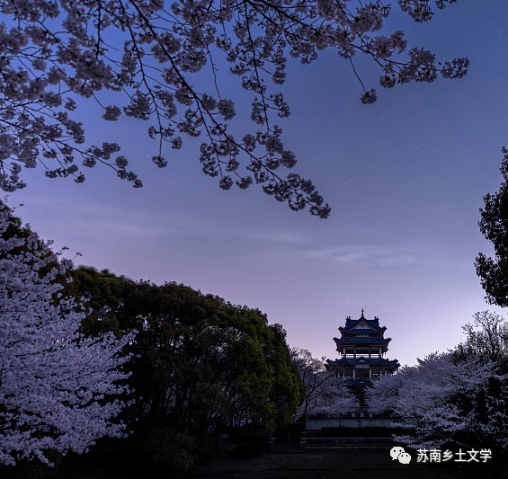

《山河入梦》
《山河入梦》是作家格非《江南三部曲》中的第二部长篇小说。小说讲述了在1952年到1962年间的江南农村，出生于大资本家家庭的20岁的姚佩佩与40岁的梅城县县长谭功达之间的一段曲折的爱情故事。2015年，《江南三部曲》获第九届茅盾文学奖。 故事发生在1952年至1962年间的江南农村，讲述了工业文明的照耀下，那个年代狂飙突进似的乌托邦实验。小说的最后一章尤其精彩，充满了悬疑、神秘的气氛，耀眼的阳光背后往往隐藏着更深的阴影。
乡村风貌
1. 乡村的自然风光和特色植物
道路的左侧是一条湍急的河流，岸边长着茂密的苇丛和菖蒲，成群的鸳鸯掠水而飞；在公路的右侧，大片的麦田和棉花地像织锦一样铺向远处的地平线。一畦畦的芜菁、蚕豆和紫云英点缀其间，开着白色、紫色和幽蓝的花。
窗外蜂飞蝶舞，柳絮满天。街上的梧桐早已绿了，风一吹，桐花伴着柳絮，飘飘荡荡，依依而飞。这天是清明节，天朗气清，温煦宜人。
2. 乡下的风土人情和屋内物品
门外的路槛上坐着一老一少两个卖唱的。老人是个瞎子，坐在一张竹凳上，拉着胡琴，嘴里胡乱地唱着普济一带流行的旧戏文。那女孩挨着他坐在地上，乌黑的大眼睛怯怯地打量着眼前的这几个陌生人。脚边搁着一支破铁罐，内有硬币数枚。店内光线阴暗，一张四仙桌靠墙放着，板凳上坐着一个白发老者，正伏在桌上酣睡。桌上放着一溜盛满茶水的玻璃杯，几只蜜蜂不知在什么地方嗡嗡叫着。
3. 乡村景观的破败感
几个放风筝的小孩之外，还真看不到什么游人。当年栽种的银杏和垂柳因无人照管大多枯死了，公园四周的围墙也早已被人拆了运回去盖房子去了，就连望江亭的顶棚和木柱也不知被什么人拆走了，只留下了亭子中央的一个石墩。看到当年的一片苦心如今化作了一片荒芜，赵焕章那张脸似乎正从残花败柳、断墙残壁中浮现出来，朝他发出冷笑。
4. 乡村静谧的氛围
四周变得十分静谧，天空湛蓝，没有一丝风。那几个放风筝的孩子吵吵嚷嚷，声音仿佛被中午静滞的空气压扁了，远远地传过来。从这可以一直看到滚滚东去的长江和江边大片的棉花地，看着江中打着补丁的帆船。
槭树和洋槐长出了新叶，阳光暖烘烘的，蒸发出雨后的湿气，带着泥土味，熏得人浑身倦怠，昏昏欲睡。
5. 人民公社化的描写
太慢了！梅城县建设社会主义新农村的步伐太慢了！临近的长洲县已率先成立了人民公社，我们还等什么？天地翻覆，光阴流转，革命形势瞬息万变。革命不是老牛破车，不是绘画绣花，不能那样雅致，那样从容不迫，那样温良恭俭。
6. 乡下田间景象
田里的秧苗浸没在水中，池塘的水都漫到岸上来了，几个打着赤膊的年轻人，手里提着渔网，正在秧田里捉鱼。当他经过西津渡桥的时候，看见整座桥面都淹没在浑浊的洪水中，只露出一截桥栏的铁桩。街上也都积满了雨水。
7. 一些田间特有的昆虫
没日没夜的昏睡，很快让他对时间的感觉变得迟钝。夏日的皓月当空，露水浓重。蟋蟀和金铃子叫个不停。多少个晚上，他摇着扇子，躺在院中的竹椅上，看着天空中金粉一样的星斗，昏昏睡去，直到黎明啾鸣的鸟将他惊醒。
感悟
《山河入梦》这个名字，“梦”意味着个人理想，“山河”则具有双重喻义，既指向“国家”的政治前途，也暗指“男女”的自然情感。可以说，“山河入梦”意指国家命运与个人爱情相互交织，共存于个体的理想之中。谭功达与姚佩佩的爱情似乎存在过，又仿佛没有。谭功达“花痴”的形象，却不是所谓“滥情”，而是没有爱的能力。谭功达则于理想，三个神秘的公式是谭功达挥之不去的心结，秀米的桃源梦毫无保留的遗传给了他，为了打造一个人间天堂，他放弃了太多的东西。小说最后，主角二人阴阳相隔的对话感人至深，“一生一代一双人，争教两处消魂”。当时神州大地是不会有那么一个公社的，但是，其中又有一些奇怪的协调感--在不真实中蕴含着巨大的真实的细节，毕竟，当时整个中国也是在个所谓的乌托邦里。换言之，最后一段给人“间离”的效果，仿佛作者跳出来跟你说，你看的不过是个虚构的故事。但是，其中的巨大的悲哀——那种在巨大的命运之前渺小的命运的悲哀。写谭功达“花痴”，也是他如贾宝玉一般，混沌未凿的表现，这一点倒是和姚佩佩经常性的在工作中闹些不大不小得笑话相呼应。